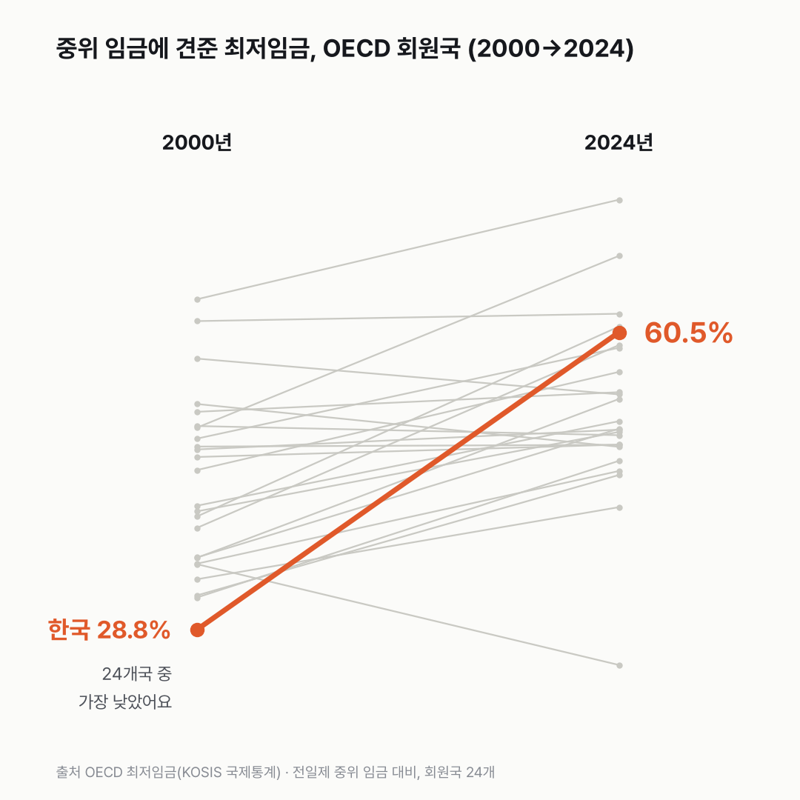
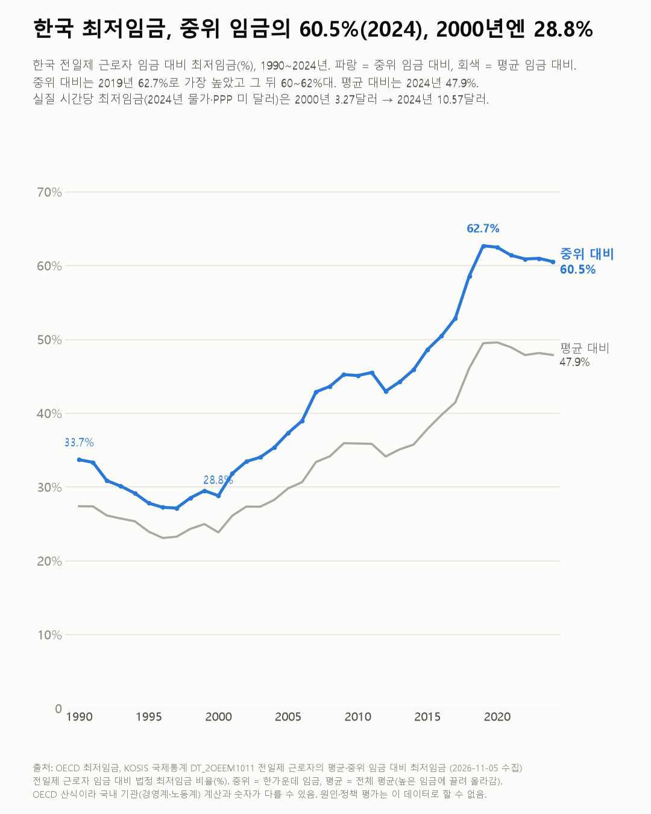
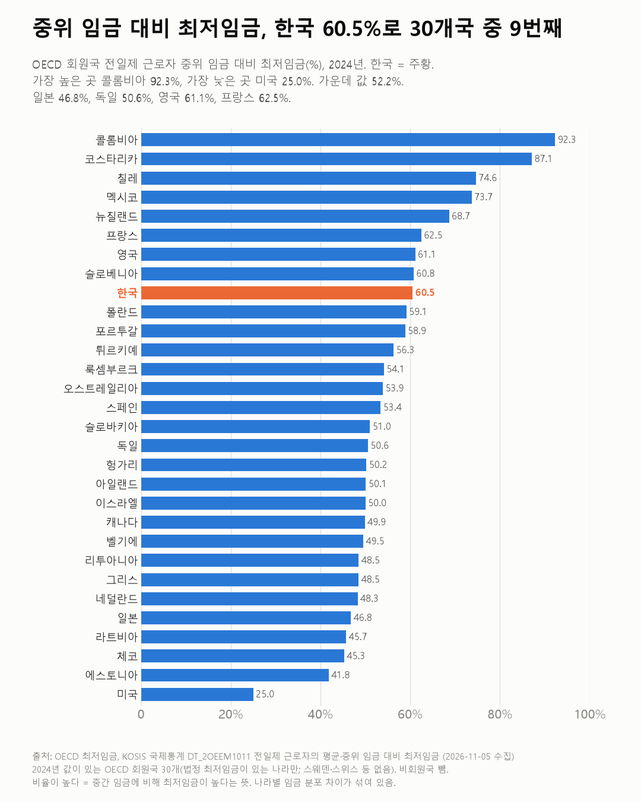

한국 최저임금, 24년 새 OECD에서 가장 많이 올랐어요
중간 월급에 견주면 한국 최저임금은 OECD 맨 아래쪽에서 위쪽 3분의 1 안으로 올라왔어요.

3줄 요약
- 2024년 한국 최저임금은 전일제로 일하는 사람 중간 임금의 60.5%예요. 2000년엔 28.8%였어요.
- 2000년과 2024년 값이 모두 있는 OECD 24개국 중 한국은 2000년에 가장 낮았고, 24년 동안 중위 임금의 28.8%에서 60.5%로 가장 많이 올랐어요.
- 2024년 값이 있는 30개국 중에선 9번째예요. 가운데 나라는 52.2%예요.
한국 최저임금이 중간 월급에 가장 가까이 갔던 해는 언제일까요? 1990년부터 이어지는 한국 칸을 끝까지 따라가 보니 2019년, 62.7%였어요. 가장 낮았던 해는 1997년 27.1%예요. 2010년 45.1%를 거쳐 2019년까지 올랐고, 2020년부터는 60~62%대에 머물렀어요.
2024년 값은 60.5%예요. 한가운데 사람이 100을 받을 때 최저임금은 60을 조금 넘어요. 평균 임금에 견주면 47.9%로 내려가요. 평균은 높은 임금 쪽으로 끌려 올라가니까요.


2000년 칸에서 손이 멈췄어요. 한국 28.8%는 24개국 중 가장 낮았고, 일본(32.2%)보다도 낮았어요. 이건 저도 처음 알았어요. 24년 동안 31.7%p 올라 오른 폭도 24개국 중 가장 커요. 두 번째인 영국이 20.2%p예요.
2024년엔 30개국 중 9번째예요. 가운데 나라는 52.2%예요. 바로 위 슬로베니아가 60.8%, 바로 아래 폴란드가 59.1%라 위아래가 촘촘하게 붙어 있어요. 가장 높은 곳은 콜롬비아 92.3%, 가장 낮은 곳은 미국 25.0%(연방 최저임금 기준)예요.


시간당 금액 표도 있어요. 2024년 물가와 구매력으로 맞춘 미 달러로, 한국은 2000년 3.27달러에서 2024년 10.57달러가 됐어요. 같은 기준으로 독일은 17.15달러, 미국은 7.25달러예요.
비율로는 위쪽인데 달러로는 독일의 3분의 2가 안 돼요. 같은 60%라도 무엇의 60%인지가 나라마다 다르다는 얘기예요. 그 바탕인 중간 월급이 나라별로 얼마인지, 그게 다음 궁금증이에요.
이 숫자는 어디서 왔나요
출처
어떻게 셌나요
- 잣대는 중위 임금 대비 최저임금이에요. 법정 최저임금을 전일제 근로자 임금의 한가운데 값으로 나눈 비율이에요. OECD는 나라 비교에 이 값을 권해요(표 주석). 평균 임금 대비는 높은 임금에 끌려 비율이 낮게 나와요.
- 법정 최저임금이 있는 나라만 값이 있어요(스웨덴·스위스 등은 없어요). 비회원국은 순위에서 뺐어요.
- '가장 낮았다'와 '가장 많이 올랐다'(2024년 값에서 2000년 값을 뺀 %p)는 2000년과 2024년 값이 모두 있는 회원국 24개 안에서 잰 거예요. 독일·멕시코·슬로베니아·코스타리카·콜롬비아는 2000년 값이 없고, 이스라엘은 2000년 값이 0.0으로 나와 빈 값으로 보고 뺐어요.
- '9번째'는 2024년 값이 있는 30개국 기준이라 나라 수가 달라요.
- 시간당 금액은 2024년 물가와 구매력(PPP)으로 맞춘 미 달러예요. 나라마다 다른 물가를 맞춘 어림값이에요.
한계 5가지
이 데이터로 말할 수 없는 것
새 글 나오면 받아 보기
피드 리더 앱에 이 사이트 주소를 한 번 넣어 두면, 새 글이 올라올 때 앱에 떠요. 가입이나 메일 주소는 필요 없어요.
받는 법 보기
- 피드 리더 앱을 하나 골라요. 새 글을 모아 보여 주는 앱이에요. 예를 들면 Feedly나 Inoreader가 있어요. 둘 다 무료고 웹·휴대폰에서 써요.
- 앱에서 '구독 추가'(+)를 누르고 아래 주소를 붙여 넣어요.
- 끝이에요. 새 글이 올라오면 앱 목록에 떠요.
https://protofu.github.io/opendata-insight/feed.xmlFeedly를 쓴다면 여기를 눌러 바로 추가할 수도 있어요.